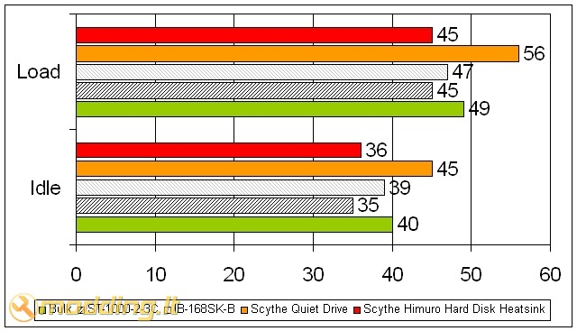

Scythe Quiet Drive & Himuro Hard Disk Heatsink
Kompiuteris jau seniai nebėra vien darbo įrankis. Vis dažniau jis atstoja ir namų multimedijos centrą bei dirba kaip parsisiuntimų serveris naktį. Todėl kompiuterio skleidžiamas triukšmas yra gan opi problema, nes tikrai niekam nesinori kentėti nemalonų burzgimą ir oro ošimą po stalu, o ypač naktį. Kiekvienas ramybės ieškotojas pradeda savo odisėją tylesnių aušintuvų įrengimu. Dažnai tuo ir baigia... Gaila, bet ne retai yra pamirštami, mano nuomone, patys svarbiausi ir patys nekalčiausi triukšmo skleidėjai - kietieji diskai (HDD). Šiais laikais be 500 Gb disko sunkiai įsivaizduojamas bent kiek rimtesnis darbas kompiuteriu. O toks žvėriukas gali sukelti visai nelauktų problemų. Statiniame režime, jis tykiai sau tūno savo nišoje ir netriukšmauja, bet apkrovus, pav. žiūrint filmus, siunčiantis ar kopijuojant duomenis, ima ir atgyja. Į paviršių išlenda nemalonios vibracijos bei burzgesiai. Kai kurie iš mūsų tikrai turi įsirengę ir ne po vieną tokį triukšmautoją (bent aš turiu 2), todėl tikrai turėtų žinoti, apie ką eina kalba. Vienas iš paprasčiausių ir patikimiausių būdų viso tai išvengti yra įsigyti Scythe "Quiet Drive" ir/arba "Himuro Hard Disk Heatsink" HDD aušintuvus - tildytuvus.
Žvilgsnis iš arčiau
Dėžutės atrodo tikrai šauniai. Nors ir nėra labai spalvingos, ar kuo nors išsiskiriančios, bet galima beveik iš karto suprasti, kad viduje rimtas daiktas. Abiejų dėžučių dydis gan panašus, gal "Himuro Hard Disk Heatsink" yra kiek didesnė.
Scythe Himuro Hard Disk Heatsink
Kadangi šie aušintuvai yra gan skirtingi, pabandysiu apžvelgti juos atskirai. Pradėsiu nuo pigesnio ir paprastesnio "Himuro Hard Disk Heatsink" modelio... Manau, jums tikrai bus įdomu pamatyti, kas "gyvena" šio aušintuvo pakuotėje:Štai ką dėžutėje:
- Scythe Himuro Hard Disk Heatsink
- 14 varžtukų
- Instrukciją
Mano nuomone, būtent taip ir turėtų atrodyti kiekvienas pasyvus HDD aušintuvas. Nieko nereikalingo. Tai tiesiog paprastas didelio paviršiaus ploto anoduoto aliuminio radiatorius su šauniomis guminėmis anti vibracinėmis tvirtinimo detalėmis, kurio viduje ir yra montuojamas kietasis diskas. Tiesa, verta paminėti, kad šios tvirtinimo detalės nėra įtvirtintos. Jos laisvai slankioja ant aušintuvo šoninių radiatorių sparnelių, t.y. jų padėtį galima laisvai keisti. Tai labai geras inžinerinis sprendimas, nes taip aušintuvą galima pritaikyti bet kokiam kompiuterio korpusui ar paslėpti už apsauginio 5.25" skydelio.
Pats aušintuvo korpusas yra sudarytas iš dviejų lengvai atsiskiriančių dalių, kurios tarpusavyje yra sutvirtinamos pridėtais varžteliais. Kaip matote, aušintuvo korpuso apačia iš vidaus yra apklijuota vibraciją ir garsą sugeriančia medžiaga. Tos pačios medžiagos kubelis yra priklijuotas ir prie dangtelio priekio. Šiuo atveju, jis atlieka kietojo disko tvirtinimo detalės vaidmenį.
Tas pilkas sluoksnis ant korpuso šonų ir dangtelio viršaus yra tarpinė, pagaminta iš šilumai laidžios medžiagos. Ji užtikrina gerą disko fizinį kontaktą su aušintuvo radiatoriais, taip optimizuodama šilumos atidavimą aplinkai.
Techniniai įrenginio parametrai:
- Modelio numeris: SCH-1000
- Dydis: 132 x 178 x 41mm
- Svoris: 790 g
- Spalva: Juoda
- Sąsaja: SATA arba PATA
- HDD formatas: 3.5"
- Įrenginio formatas: 5.25"
Montavimas
Ši procedūra tikrai neturėtų sukelti per daug rūpesčių. Tiesiog atidžiai perskaitykite instrukciją ir/arba mano patarimus :)
Pasiruoškite "Himuro Hard Disk Heatsink" dangtelį ir savo kietąjį diską. Diskas į dangtelį dedamas "controleriu" žemyn taip, kad maitinimo ir duomenų jungtys matytųsi pro dangtelyje paliktą plyšiuką. Diskas aušintuvo viduje nėra niekaip prisukamas, jį tiesiog prilaiko anti vibracinės medžiagos kubelis dangtelio priekyje. Todėl diską pirmiausiai reiktų įdėti tuo galu, kuriame yra įrengtos ankščiau minėtos jungtys, ir švelniai įspausti į vidų. Galutinis rezultatas turėtų atrodyti taip:
Kiti montavimo procedūros žingsniai yra kiek įprastesni. Dabar reikia atgal sutverti aušintuvą. Tam nesumaišydami pusių uždedame dangtelį ant aušintuvo korpuso. Jei skylutės varžteliams nesutampa - sumaišėte puses. Apsukite. Tai atlikę, su ne per dideliu kryžminiu atsuktuvu tvirtai susukite visus 6 komplekte pridėtus juodus varžtelius. Dabar kiškite į kompiuterio korpusą, prisukite įrenginį likusiais 8 varžteliais ir prijunkite maitinimo bei duomenų kebelius. Štai ir viskas...
Scythe Quiet Drive
Quiet Drive nuo Himuro Hard Disk Heatsink skiriasi gan daug. Jų tikrai netyčia nesumaišysi. Skiriasi tiek išvaizda, tiek ir konstrukcinės įrenginių savybės.Štai ką radau pakuotėje:
- Scythe Quiet Drive
- Aliuminio dėžutę kietąjam diskui
- 2 šilumai laidžias tarpines
- Montavimo varžtelius
- SATA matinimo ir duomenų kabeliuką
- Molex tipo maitinimo kabeliuką
- Instrukciją
Kaip matote, aušintuvo korpusas glotnus, jokių radiatorių sparnelių. Išsikišusios tik tvirtinimo auselės. Jos nuo aušintuvo korpuso atskirtos gumine tarpine, kuri neleidžia kietojo disko vibracijai pereiti į kompiuterio korpusą. Auselių padėties keisti negalima, tačiau kiekvienoje iš jų yra po keturias skylutes varžteliams, kas leidžia gan paprastai sumontuoti įrenginį standartiniame PC korpuse. Tiek įprastai, tiek paslepiant įrenginį už 5.25" skydelio.
Verta paminėti, kad Quiet Drive korpusas yra visiškai uždaras. Netgi plyšelis duomenų ir maitinimo laidams yra padengtas garsą ir vibraciją sugeriančia medžiaga taip, kad uždėjus Quiet Drive dangtelį, ji standžiai apglėbia laidus nepraleisdama į išorę nė menkiausio HDD skleidžiamo garselio.
Montavimo patogumui gamintojas prideda mini SATA maitinimo ir duomenų kabeliuką. Vienas jo galas jungiamas į HDD aušintuvo viduje, o kitas lieka aušintuvo išorėje. Taip jums nebereikia sukti galvos, kaip prijungti maitinimą diskui, neišmontavus PSU arba neatliekant aukštojo pilotažo akrobatinių manevrų su nepilnai surinktu aušintuvo.
Gaila, bet komplekte neradau PATA duomenų kabelio ilgintuvo, nors jis ir yra nurodytas prie gaminio pridėtoje instrukcijoje. Galbūt, gamintojas nusprendė, kad tokiais diskais jau niekas nebesinaudoja, arba kad nėra taip sunku visa ATA133 kabelį prijungti prie kietojo disko aušintuvo viduje. Bent gerai, kad Molex tipo maitinimo ilgintuvo nepamiršo. Jis gali praversti ir montuojant SATA diską.

Scythe Quiet Drive yra sukonstruotas "matrioškos" principu. Išardę pagrindinę aušintuvo dėžutę randame kitą, mažesnę aliumininę dėžutę, skirta kietajam diskui sumontuoti.
Kaip matote, Quiet Drive vidinis perimetras yra padengtas garsą ir vibraciją sugeriančia medžiaga. Nors ji ir atlieka kilnų darbą, tačiau prie HDD aušinimo tikrai neprisideda. Šiai problemai spręsti ir sukurta aliumininė dėžutė. Ji atlieka tarsi šiluminio buferio vaidmenį, perpaskirstydama kietojo disko šilumą nuo jo kraštų į savo (dėžutės) dangtelius. To reikia efektyvesniai šilumos pernašai į aušintuvo išorę užtikrinti.
Šiluminės varžos sumažinimui dėžutės ir aušintuvo korpuso lietimosi vietose naudojamos komplekte pridėtos šilumai laidžios tarpinės.
Techniniai įrenginio parametrai:
- Modelio numeris: SQD-1000
- Dydis: 1145 x 198 x 36,5 mm
- Svoris: 860 g
- Spalva: Juoda
- Sąsaja: SATA arba PATA
- HDD formatas: 3.5 colio
- Įrenginio formatas: 5.25"
Montavimas
Šio aušintuvo montavimas trunka kiek ilgiau, nei Himuro Hard Disk Heatsink, nes reikia sutverti net 2 dėžutes, kuriose "gyvena" kietasis diskas. Na bet apie viską iš eilės.
Pirmiausia pasiruošiame mažąją aliumininę dėžutę. Į apatinę jos dalį įdedam kietąjį diską bei dėžutės viršaus uždedame dangtelį. Sutapdiname varžtelių skylutes ir įtvirtiname HDD dėžutės viduje komplekte pridėtais varžteliais pusapvalėmis galvutėmis. Atlikę tai, prijungiame SATA duomenų ir maitinimo kabelių ilgintuvą.
Pirmiausia į Quiet Drive aušintuvo dėžutę įdedame šiluminę tarpinę. Čia svarbu nepamiršti nuo šilumai laidžios tarpinės abiejų pusių nuimti apsauginės permatomo celofano plėvelės, nes kitaip tarpinė neveiks arba veiks visiškai neefektyviai. Tai atlikę, įdedame ankstesniame žingsnyje surinktą aliumininę dėžutę su kietuoju disku ir prijungtais laidais. Dėžutė dedama kietojo disko viršumi žemyn, t.y. taip, kad maitinimo ir duomenų jungtys gražiai atsigultų tam skirtoje vietoje. Ant dėžutės uždedame kitą tarpinę (tik nepamirškit nuimti apsauginės plėvelės). Visą atliktą darbą paslepiame po juoduoju Quite Drive dangteliu.

Sutvirtiname Quiet Drive dalis komplekte pridėtais varžteliais. Ir sumontuojam aušintuvą kompiuterio korpuse. Nepamirštam prijungti laidų ;)
Testai
Testavimo objektu buvo pasirinktas WDC WD5000AAKS kietasis diskas. Abiejų aušintuvų testai atlikti tą pačią gan šiltą dieną, todėl aplinkos temperatūros kaita neturėtų turėti lemiamos įtakos testo rezultatams. Testo rezultatų grafike, be Scythe aušintuvų pateiktos ir
Icy Box 168SK-B bei Stardom ST1000-2-S2C HDD stalčiukų temeratūros testų rezultatai.
Idle: Kompiuteris, dirbantis „tuščia eiga“, buvo paliekamas geram pusvalandžiui...
Load: Kompiuteris geras 20 min. buvo kankinamas sintetiniais testais, tokias kaip PCMark 2001, HD Tach ir kt. Norint apkrauti HDD kuo labiau, kartais šios programos buvo leidžiamos vienu metu.
Išvados ir rezultatai
Scythe Himuro Hard Disk Heatsink
Pliusai:- Nebrangus (64,06 Lt)
- Lengvas montavimas
- Tinka SATA ir PATA diskams
- Kintamos padėties anti vibracinės montavimo auselės
- Efektyviai aušina ir "užčiaupia" kietąjį diską
- Didelių minusų nepastebėta
Scythe Quiet Drive
Pliusai:- Nesudėtingas montavimas
- Pridėti SATA maitinimo ir duomenų bei Molex tipo maitinimo kabelio ilgintuvai
- Beveik visiškai nuslopina HDD skleidžiamą triukšmą ir vibraciją
- Kaina (130,49 Lt)
- Neefektyvus disko aušinimas
- Nepridėtas ATA133 kabelio ilgintuvas
Aukščiau pateikti testų ir "Pro et Contra" rezultatai kalba patys už save. Manau, drąsiai galima šios dvikovos laimėtoju paskelbti "Scythe Himuro Hard Disk Heatsink" kietojo disko aušintuvą. Tai tikrai nebrangus, patikimas ir gerai diską aušinantis įrenginys. Dėl didelio paviršiaus ploto, jo aušinimo charakteristikos beveik prilygsta Stardom ST1000-2-S2C HDD stalčiukui, o pastarasis yra brangesnis ir turi mažulytį ventiliatoriuką. Himuro Hard Disk Heatsink ne tik aušina diską, bet ir puikiai panaikina disko keliamą vibraciją bei triukšmą. Laisvai reguliuojamos anti vibracinės montavimo auselės leidžia pritaikyti beveik bet kokiam kompiuterio korpusui. Aušintuvą galima montuoti taip kad visi matytų, arba paslėpti už 5.25" apsauginio skydelio.
Scythe Quiet Drive iš ties mane nuvylė. Iš >130 Lt kainuojančio aušintuvo tikrai tikėjausi geresnių rezultatų. Garso ir vibracijos slopinimo savybėms čia tikrai nieko neprikiši, bet disko aušinimas tikrai turėtų būti geresnis. Paprasčiausiai išorinė aušintuvo dėžutė nėra labai efektyvus radiatorius, o ir jos paviršiaus plotas yra labai mažas lyginant su Himuro Hard Disk Heatsink. Mano kuklia nuomone, 130 Lt yra geriau investuoti į du Scythe Himuro Hard Disk Heatsink aušinuvus nei į vieną Scythe Quiet Drive :)
Scythe Himuro Hard Disk Heatsink bei Quiet Drive atitinkamai suteikiu 10 ir 7 balus iš galimų 10.
Modding.lt komanda dėkoja
G. Povilaičiui iš UAB „Silent PC“ už suteiktą galimybę apžvelgti Scythe Quiet Drive bei Himuro Hard Disk Heatsink produktus.
Primename, kad UAB „Silent PC“ visus savo produktus Modding.lt lankytojams siūlo už specialią kainą (norėdami jas sužinoti, turite būti prisiregistravęs modding.lt aktyvus forumo vartotojas).
Beje, jei norėsite pakomentuoti mano straipsnį arba pareikšti savo nuomonę, apsilankykite Modding.lt forume.


{kind=link}
{kind=link}
{kind=link}
{kind=link}
{kind=link}
{kind=link}
{kind=link}
{kind=link}
{kind=link}
{kind=link}
{kind=link}
{kind=link}
{kind=link}
{kind=link}
{kind=link}
{kind=link}
{kind=link}
{kind=link}
{kind=link}
{kind=link}
{kind=link}
{kind=link}
{kind=link}
{kind=link}
{kind=link}
{kind=link}
{kind=link}
{kind=link}
{kind=link}
{kind=link}
{kind=link}
{kind=link}
{kind=link}
{kind=link}
{kind=link}
{kind=link}